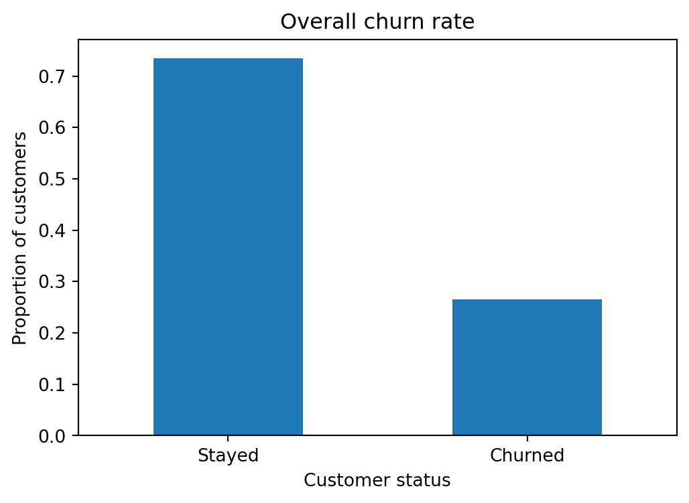
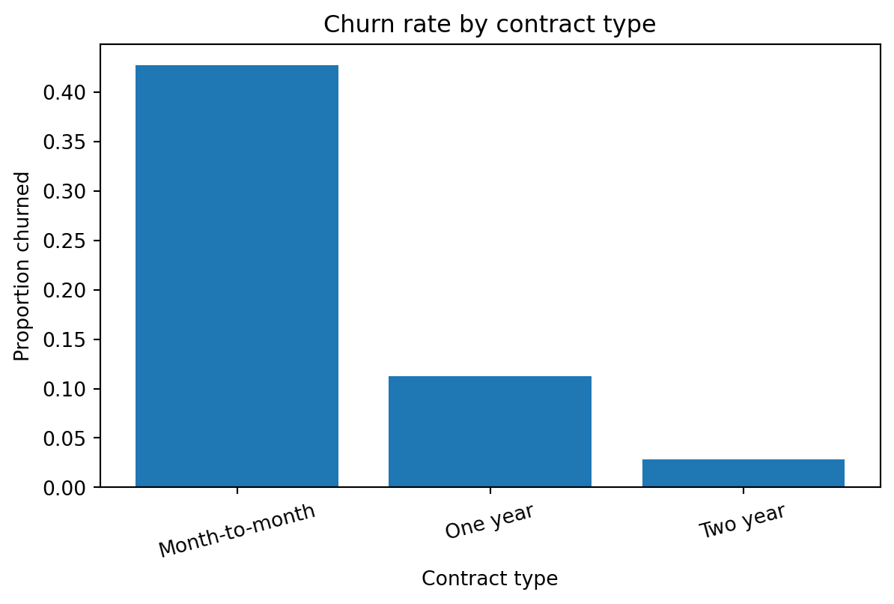
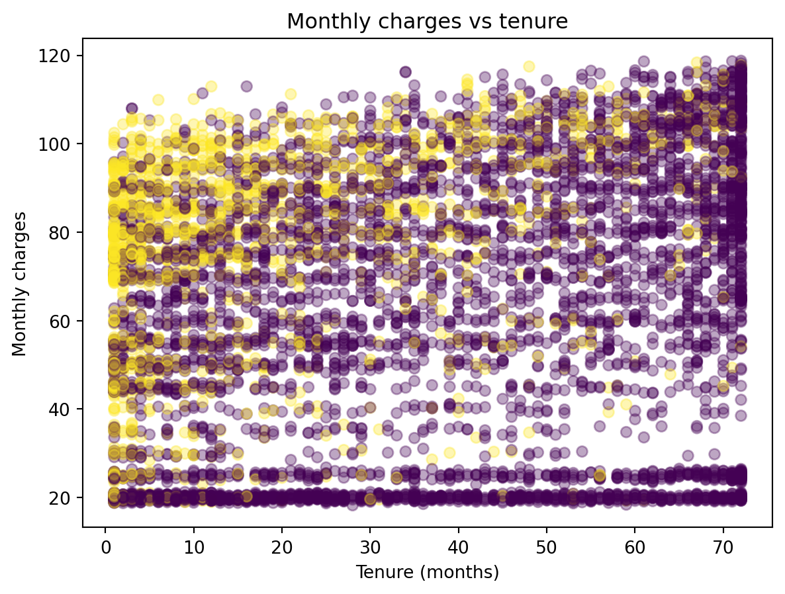
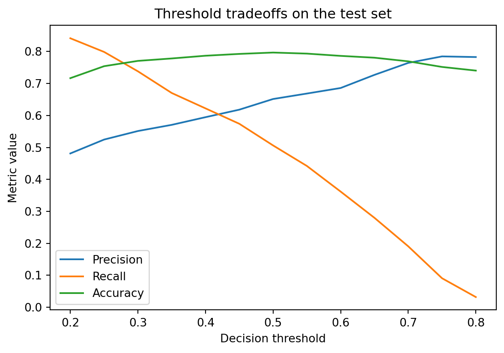

Customer Churn Modeling with Reproducible Machine Learning
A prose-first Quarto report using Python, pandas, scikit-learn, cross-validation, and ROC-AUC.
Author
Abdullah Korra
Published
April 21, 2026
Introduction
This report asks a practical question: which customers are at the highest risk of churn, and how well can that risk be predicted from customer account information? This is a good portfolio problem because it naturally supports exploratory data analysis, preprocessing, classification, cross-validation, and threshold-aware model evaluation.
The writeup is intentionally prose-forward. The goal is not to show every possible model. The goal is to show a clean analytical workflow that balances technical detail with readable decision support.
Data and setup
The analysis uses the common Telco Customer Churn dataset. The code below first looks for a local copy in data/raw/. If the file is not present, it falls back to a public raw CSV URL so the document can still render.
The cleaned data contains customer demographics, service subscriptions, contract details, and billing information. The outcome is whether the customer churned.
Exploratory data analysis
A good report does not flood the page with charts. The purpose here is to identify a few patterns that matter for modeling and interpretation.



Three patterns stand out. First, churn is present but not dominant, so the problem is somewhat imbalanced without being extreme. Second, contract type appears strongly related to churn. Third, churn risk is not likely to be captured by a single numeric variable alone, which supports using a preprocessing pipeline that handles mixed data types.
Feature engineering and preprocessing
The dataset includes both numeric and categorical variables. A clean way to handle this is a column transformer inside a pipeline.
The cross-validation table gives a balanced view of model quality before looking at the held-out test set. ROC-AUC is the main ranking metric because the business question is about ordering customers by risk, not just making hard class calls at one threshold.
The exact best model may change after tuning, but this structure already supports a professional discussion. Logistic regression is often a strong baseline in churn work because it is interpretable and stable. A tree-based model is useful to check whether nonlinear interactions meaningfully improve ranking performance.
Performance analysis
For a professional writeup, this section should move past metric reporting and explain tradeoffs.
ROC-AUC tells us how well the model separates higher-risk from lower-risk customers across thresholds.
Precision matters when retention outreach is expensive and false alarms are costly.
Recall matters when missing a likely churner is costly.
Threshold choice should depend on business constraints rather than habit.
A natural next step would be to compare several decision thresholds and frame the tradeoff in operational terms.
threshold
precision
recall
accuracy
0
0.20
0.481142
0.841355
0.716588
1
0.25
0.524590
0.798574
0.754028
2
0.30
0.551265
0.737968
0.770616
3
0.35
0.570561
0.670232
0.778199
4
0.40
0.594549
0.622103
0.786730
5
0.45
0.618042
0.573975
0.792417
6
0.50
0.651376
0.506239
0.796682
7
0.55
0.668464
0.442068
0.793365

Conclusion
This project shows a complete and readable classification workflow:
start with a clear prediction question,
perform targeted exploratory analysis,
build a preprocessing pipeline for mixed data,
compare models with cross-validation,
evaluate test-set performance with ROC-AUC and threshold-aware metrics,
close with decision-oriented interpretation rather than code commentary.
For a stronger final version, I would add modest hyperparameter tuning, feature importance or coefficient interpretation, and a short section on limitations such as missing behavioral variables or possible temporal leakage concerns.